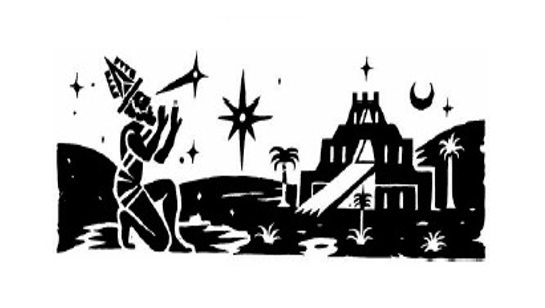

Textos para a questão 8:
O que é Ciência? - Mockaitis
A ciência como um mero conjunto de conhecimentos estabelecidos, que é o significado mais comum e difundido da palavra, tem gerado muitas confusões. Nas escolas e universidades, não é ensinada a ciência, pois o que se ensina são conhecimentos consolidados. Sem dúvida que quanto maior o grau de educação, mais profundos serão estes conhecimentos, mas isso não faz com que se deixe a universidade um formando conhecedor de ciência (ao menos não necessariamente). Foi neste sentido que o astrônomo Carl Sagan afirmou que ciência é muito mais uma forma de pensar do que um corpo de conhecimentos. O conhecimento é o grande conjunto dessas leis. O que aprendemos é meramente um corpo de conhecimentos. Para discernir criticamente, precisamos conhecer a ciência como método, e não somente seus fatos consolidados. Outra coisa que se deve salientar é a importância da educação como um processo de transmissão de todo esse conhecimento, de forma a combater a ignorância individual.
Desta maneira e de uma forma bem geral, a ciência é o conjunto de processos que leva ao descobrimento das leis que regem a natureza. Acima de tudo, o que alimenta a ciência é a nossa curiosidade. É nosso instinto de desbravar o desconhecido. Somos compelidos a combater a ignorância. Porque, talvez instintivamente, sabemos que tornando o desconhecido cada vez mais conhecido, cada vez mais sentimos menos razões para termos medo, uma vez que tememos tudo o que desconhecemos.
Fonte: MOCKAITIS. O que é ciência? In: Blogs de ciência da Universidade Estadual de Campinas. Disponível em: . Acesso em: 22. mar 2019.
No início – Uma breve história da ciência.

A CIÊNCIA É ESPECIAL. É a melhor forma que temos de descobrir coisas sobre o mundo e tudo o que faz parte dele — e isso nos inclui.
As pessoas fazem perguntas sobre o que veem ao redor há milhares de anos. As respostas sugeridas sofreram muitas mudanças. Assim como a própria ciência. A ciência é dinâmica, desenvolvendo-se sobre ideias e descobertas que uma geração passa para a próxima, bem como avançando a passos largos quando são feitas novas descobertas. O que não mudou é a curiosidade, a imaginação e a inteligência daqueles que fazem ciência. Talvez saibamos mais hoje, porém as pessoas que refletiram a fundo sobre o mundo três mil anos atrás eram tão inteligentes quanto nós.
Fonte: BYNUM, William. Uma breve história da ciência. [tradução: Iuri Abreu]. Porto Alegre, RS: L&PM, 2014.
8) A ciência não é apenas sobre microscópios e tubos de ensaio em laboratórios, embora isso seja o que a maioria das pessoas imagina quando pensa em ciência. Durante grande parte da história humana a ciência foi (e ainda é) utilizada para tentar entender e controlar o mundo em que vivemos. Após a leitura dos excertos acima, explique, levando em conta os pontos abordados, qual é a importância da ciência como bem intelectual da humanidade e porque é vital que exista um diálogo íntimo entre a produção de conhecimento científico e a educação.